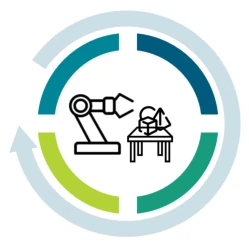
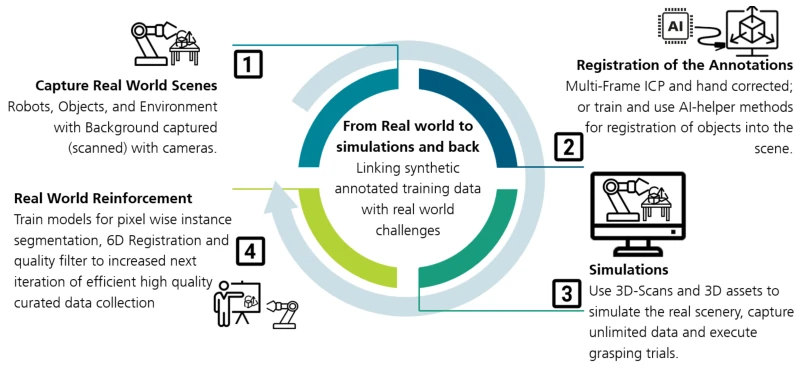
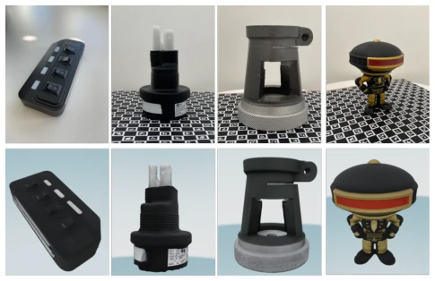
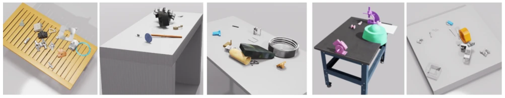
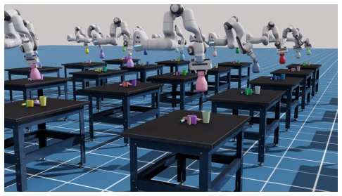

This paper attempts to bridge the Sim-to-Real gap using physics verification; the idea is very compelling. It abandons force-closure, a metric of mere theoretical speculation, and implements a four-stage slip-test, measuring gravity, oscillation, and pendulum effects; this is more practical than GraspNet [11]. However, it does not fully solve the "simulation is ultimately simulation" problem; physical attributes are still based on CAD approximations, and friction coefficients are default values, leading to biases in real-world evaluation. Most ironically, as a dataset paper, it surprisingly did not conduct downstream task evaluations, only throwing out a bunch of statistics, claiming "left for future work"; this operation has a suspicion of "making empty promises". But at least it open-sourced the Docker container, so those wanting to reproduce can at least run it. For VLA pre-training, this data with physical grounding is indeed stronger than purely semantic CLIP, alleviating geometric understanding defects [41]. But the limitations of the Franka single-arm also compromised generalization, and there are no multi-finger or suction cup grasps. Especially that 17% of "bad grasps" marked as hard negative samples, which is very valuable for training quality regressors; unfortunately, the paper did not show specific effects, only staying at the data release level.
Existing grasp datasets have obvious shortcomings. Cornell [16] and Jacquard [7] only provide 2D planar grasps for rectangles, unable to represent tilted or lateral configurations required for real manipulation. GraspNet-1B [11] although provides 6-DoF, its force-closure metric assumes rigid body perfect contact, with poor correlation to real success rates under dynamic disturbances [24]. ACRONYM [9] although has physics verification lacks visual observation, and uses non-textured meshes causing large Sim-to-Real gap. Large models like RT-2 [3], π0 [1] collapse on out-of-distribution generalization, the root cause is lack of visual representation with physics grounding [8, 41]. Existing data cannot simultaneously provide photorealistic RGB-D, physics-verified grasp quality, and Sim-Real bidirectional links. GraspIT aims to solve these deficiencies, providing a physical foundation for next-generation manipulation models, especially filling the physics reasoning defects in VLA encoders regarding geometric understanding, avoiding models learning object-specific shortcuts rather than physical laws.

Figure 1. Grasp ITerative robot tabletop object manipulation dataset: illustration of the four-stage iterative concept.
方法Method
整体流程是 Real↔Sim 闭环。1) 仿真分支：用 Isaac Sim 生成桌面场景，从 ABC 数据集 [22] 随机采样物体，256 个相机位姿渲染 RGB-D，确保场景多样性。2) 真实分支：UR-5 机械臂 + RealSense 扫描真实物体（TRELLIS [39]），注册到仿真器，实现几何对齐。3) 标注：Robot School 用 Franka Panda 执行四阶段滑移测试（轨迹规划、提升、水平振荡、摆锤），计算连续质量分 s∈[0,1]，考虑滑移惩罚。若滑移过大，即使通过阶段也会扣分，公式为 s = b - penalty。4) 链接：真实场景几何注册进 Isaac Sim，仿真验证的标签 back-project 到真实帧，确保坐标一致。所有工具 Docker 化，支持扩展。轨迹规划使用 cuRobo [34] 过滤不可达候选，确保正样本可执行。四阶段分别测试接触、提升、水平扰动和摆锤扰动，捕捉静态指标忽略的失效模式。
The overall flow is a Real↔Sim closed loop. 1) Simulation branch: Use Isaac Sim to generate desktop scenes, randomly sample objects from ABC dataset [22], render RGB-D with 256 camera poses, ensure scene diversity. 2) Real branch: UR-5 arm + RealSense scan real objects (TRELLIS [39]), register to simulator, achieve geometric alignment. 3) Annotation: Robot School uses Franka Panda to execute four-stage slip-test (trajectory planning, lift, horizontal oscillation, pendulum), calculate continuous quality score s∈[0,1], consider slip penalty. If slip is too large, even if passing the stage, points are deducted, formula is s = b - penalty. 4) Link: Real scene geometry registered into Isaac Sim, sim-verified labels back-projected to real frames, ensure coordinate consistency. All tools Dockerized, support extension. Trajectory planning uses cuRobo [34] to filter unreachable candidates, ensure positive samples executable. Four stages test contact, lift, horizontal disturbance, and pendulum disturbance respectively, capture failure modes ignored by static metrics.

Figure 2. GraspIT Real↔Sim Collection Loop. Objects are 3-D scanned via generative image-to-3D reconstruction and imported into Isaac Sim. Real scenes are captured by a robot-mounted camera, registered into the simulator, and extended with synthetic views. Physics-validated grasp labels from the Robot School are back-projected onto all real and synthetic frames, yielding a consistent annotation coordinate frame across both domains.

Figure 5. Object Scan Quality. Top row: real physical objects and scene. Bottom row: reconstructed textured meshes imported into Isaac Sim and grasp annotations.
Initial release includes 1035 simulation scenes + 100 real scenes, total 316k frames. Among 2.3M grasp candidates, 83% passed slip test (s≥0.50). Comparison table shows GraspIT is the only dataset simultaneously providing physics verification, reachability filtering, Sim-Real link. Ablation shows 11.46% candidates filtered due to trajectory planning failure, 17.06% marked as bad grasp due to slip test failure. Although fine-grained scores are provided, the paper admits no downstream task evaluation, physical properties (e.g., friction) still approximated. Generation time takes approx 2-3 months single GPU. Scenes contain 7.4k unique objects, prevent overfitting. 94k in bad grasps are "penalty" samples, passed some stages but slip too large, provide high-quality negative samples. Dataset statistics detailed show pass rates per stage, prove slip test stricter than pure force-closure.

Figure 3. GraspIT Scene Variety. Representative Isaac Sim tabletop scenes with ABC objects, randomised table textures, and HDR lighting. Every scene introduces novel object combinations.

Figure 6. Robot School. Parallel Franka Panda instances execute grasp candidates through four sequential slip tests. The robot is spawned at a “perfect reach” position 90◦tilted above the object plane to ensure reachable paths exist for all validated candidates.